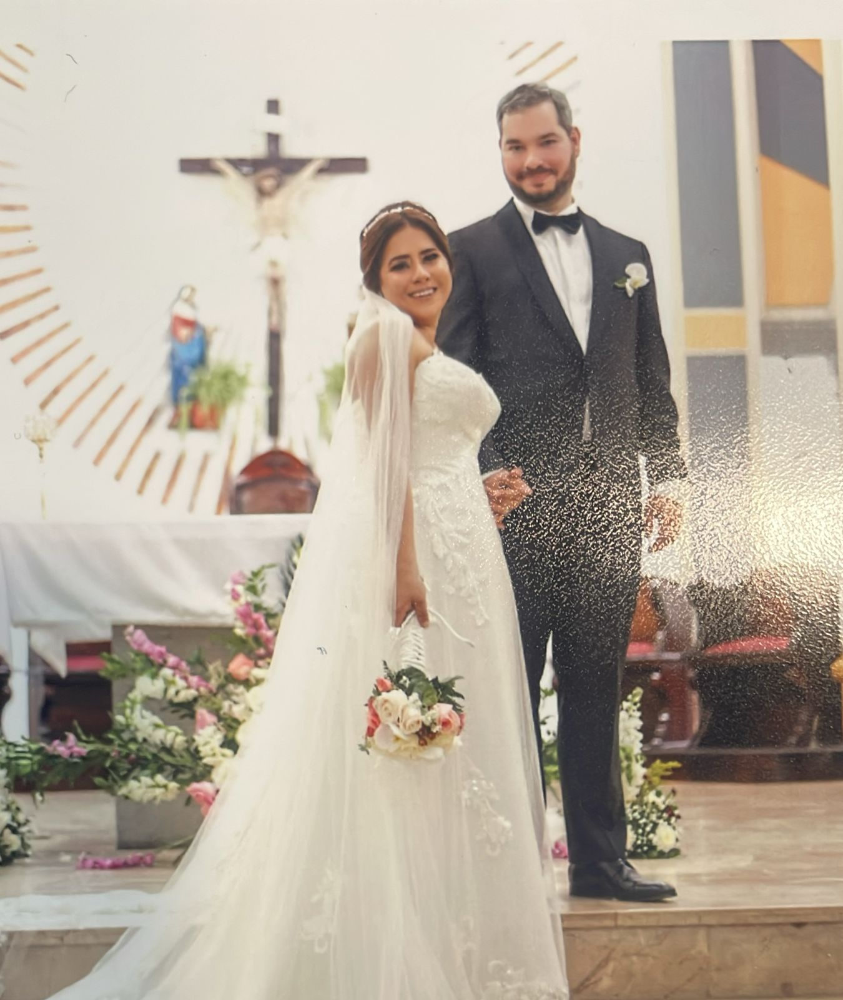

<div class="container">
  
  <div class="disc">
      <div class="heart"> </div>
      <div class="message">Jean + Anita</div>
      <audio id="audio" src="chanson.wav"></audio>
  </div>
  <div class="valentin"> Feliz san valentin mi Amor</div>
</div>
<style>
    .container{
        position: relative;
        display: flex;
        justify-content: center;
        flex-direction: column;
    }
    img{position: relative;
    }
    .disc{
      display: flex;
    justify-content: center;
    align-items: center;
    background-color: yellow;
    border-radius: 50%;
    position: absolute;
    width: 15rem;
    height: 15rem;
    z-index: 5;
    left: 40%;
    bottom: 38rem;
    }
    .heart {
    position: relative;
    width: 100px;
    height: 100px;
    background-color: red;
    transform: rotate(-45deg);
    margin: 50px auto;
  }

  .heart::before,
  .heart::after {
    content: '';
    position: absolute;
    width: 100px;
    height: 100px;
    border-radius: 50%;
    background-color: red;
  }

  .heart::before {
    top: -50px;
    left: 0;
  }

  .heart::after {
    top: 0;
    left: 50px;
  }
  .message{
    position:absolute;
    top: 4.8rem;
  }
  .valentin{
    position: absolute;
    z-index: 10;
    color: red;
    /* font-size: large; */
    background-color: white;
    width: 100%;
    justify-content: center;
    width: 100%;
    height: 205;
    font-size: 8rem;
    height: 20rem;
    bottom: 10rem;
  }

</style>


<script>
  const disc = document.querySelector('.disc');
  const image = document.getElementById('image');
  let rotation = 0;
  let isRotating = false;
  let images = []; // Tableau pour stocker les noms des fichiers images
  let audio = document.getElementById('audio');

  // Génération des noms de fichiers images
  for (let i = 0; i <= 12; i++) {
      images.push(`photo${i}.jpg`);
  }

  disc.addEventListener('click', () => {
      if (!isRotating) {
          isRotating = true;
          rotateDisc();
          audio.play(); // Commencer la lecture de l'audio
          rotateImage();
      } else {
          isRotating = false;
          audio.pause(); // Mettre en pause la lecture de l'audio
      }
  });

  function rotateDisc() {
      rotation += 1; // Augmente la rotation par 1 degré à chaque itération
      disc.style.transform = `rotate(${rotation}deg)`; // Applique la nouvelle rotation
      if (isRotating) {
          requestAnimationFrame(rotateDisc); // Appelle la fonction de rotation de manière récursive
      }
  }

  let imageIndex = 0;
  function rotateImage() {
      image.src = images[imageIndex]; // Afficher la première image
      setInterval(() => {
          if (isRotating) {
              imageIndex = (imageIndex + 1) % images.length; // Calcul de l'index de l'image suivante
              image.src = images[imageIndex]; // Changement de l'image
          }
      }, 30000); // Changer l'image toutes les 10 secondes
  }
</script>